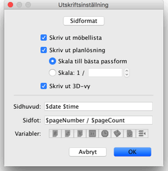
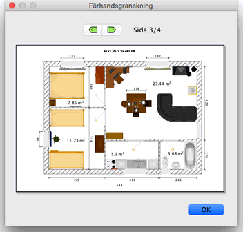

|
|
Skriva ut ett hem | ||
|
F�r att skriva ut ett hem v�ljer du Arkiv > Skriv ut....
Som standard skriver Sweet Home 3D ut m�bellistan, planl�sningen och den aktuella
3D-vyn av hemmet, p� vanlig papperstorlek, marginaler och pappersvridning. 
I rutan f�r utskriftsinst�llningar kan du �ndra papperstorlek och papprets vridning
genom att klicka p� knappen Sidformat. Du kan �ven v�lja om m�bellista,
planl�sningen och 3D-vyn ska skrivas ut eller ej. Om du inte vill anv�nda den
automatiskt utr�knade skalan f�r att anpassa utskriften efter pappersstorleken, kan du
v�lja en annan skala i Skala-f�ltet.
Anv�nd Variabler-knapparna som visas under Sidhuvud- och Sidfot-textf�lten f�r att f� till variabelnamnen exakt. Eftersom $-tecknet �r reserverat f�r variabler anv�nder du koden $$ f�r att skriva ett $-tecken. F�r att f�rhandsgranska din utskriftsinst�llning p� sk�rmen v�ljer du Arkiv > F�rhandsgranska....  I rutan f�r f�rhandsgranskning kan du se hur ditt hem kommer skrivas ut sida f�r sida. F�r att byta sida som f�rhandsgranskas anv�nder du dig av pilarna i toppen av rutan eller trycker p� piltangenterna. |
|